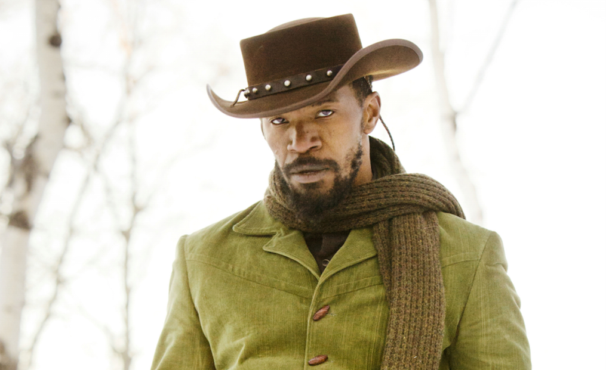
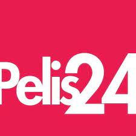
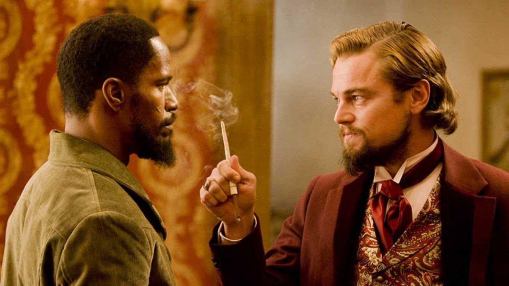
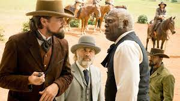
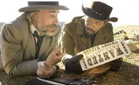
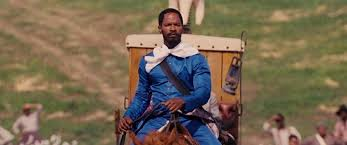
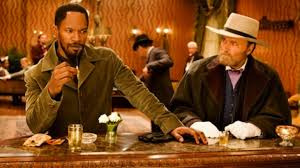
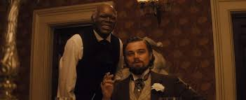

Jamie Foxx:
Django, a veces denominado Django Freeman es el marido de Broomhilda y un antiguo esclavo que fue liberado por el rey Schultz. Django es el protagonista principal de Django Unchained.
Un antiguo esclavo une sus fuerzas con un cazador de recompensas alemán que lo libera y ayuda a cazar a los criminales más buscados del Sur, todo ello con la esperanza de encontrar a su esposa perdida hace mucho tiempo.

Django, a veces denominado Django Freeman es el marido de Broomhilda y un antiguo esclavo que fue liberado por el rey Schultz. Django es el protagonista principal de Django Unchained.
Calvin J. Candie era el propietario francófilo de la plantation Candyland y el antagonista principal inicial de Django Unchained.
Stephen fue un fiel amigo y esclavo doméstico de Calvin Candie. Él es el antagonista secundario, luego verdadero antagonista principal de Django Unchained. Siendo un esclavo doméstico mayor más respetado que el resto, Stephen se ve personalmente solo superado por el hombre blanco con todos sus compañeros negros debajo de él.
El Dr. King Schultz fue un dentista convertido en cazarrecompensas que liberó a Django y lo ayudó a rescatar a su esposa. Schultz finalmente murió en un tiroteo cuando le disparó a Calvin Candie en el pecho con su ladygun.
Broomhilda von Shaft, también conocida como Hildi, es la esposa de Django y ex esclava de Calvin Candie.

|
Valoración: 8.2/10 |
|  | Valoración: 4.1/5 |
| Valoración: 8.5/10 | |

|
Valoración: 7.9/10 |
IMÁGENES:
     TRAILER:
VIDEO PERSONAL:
Oscars ->
Mejor actor de reparto - Christoph Waltz
Mejor guión original - Quentin Tarantino
Mejor pelicula (Nominado)
Mejor fotografía (Nominado)
Globos de Oro ->
Mejor actor de reparto - Christoph Waltz
Mejor guión original - Quentin Tarantino
Mejor actor de reparto - Leonardo DiCaprio (Nominado)
Mejor director - Quentin Tarantino (Nominado)